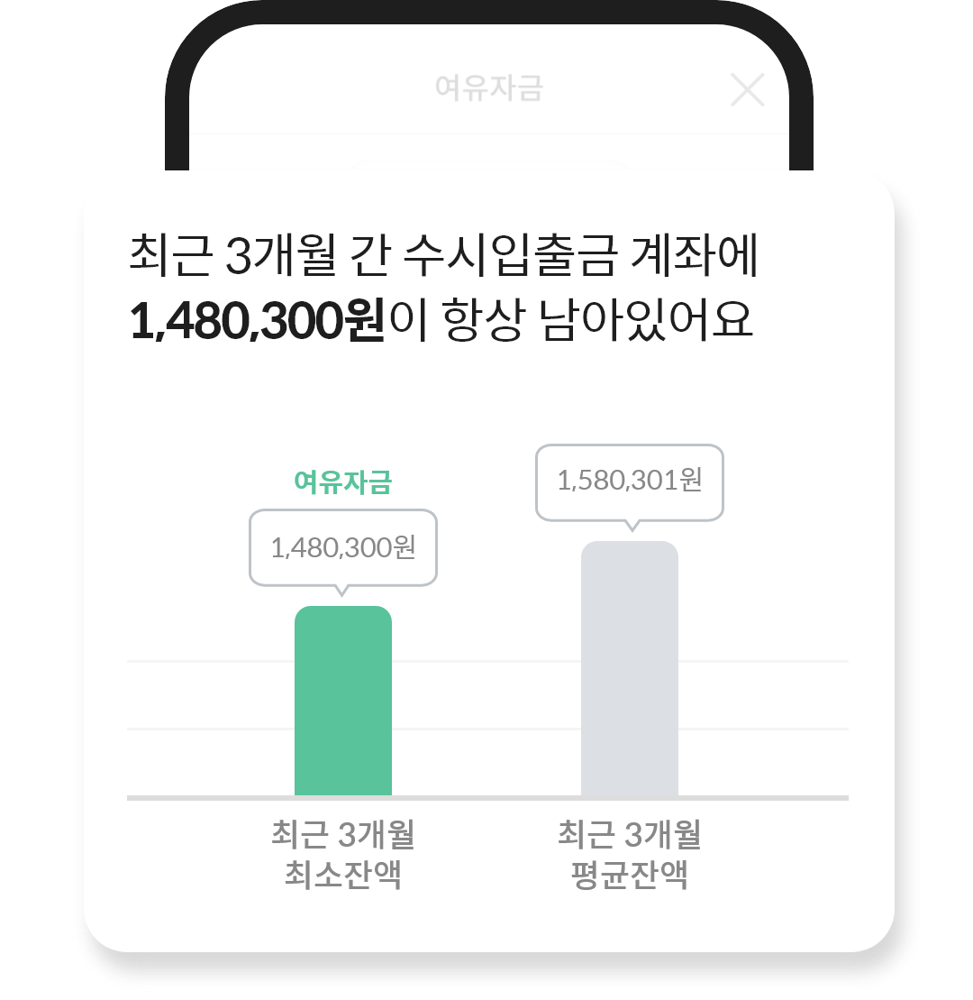
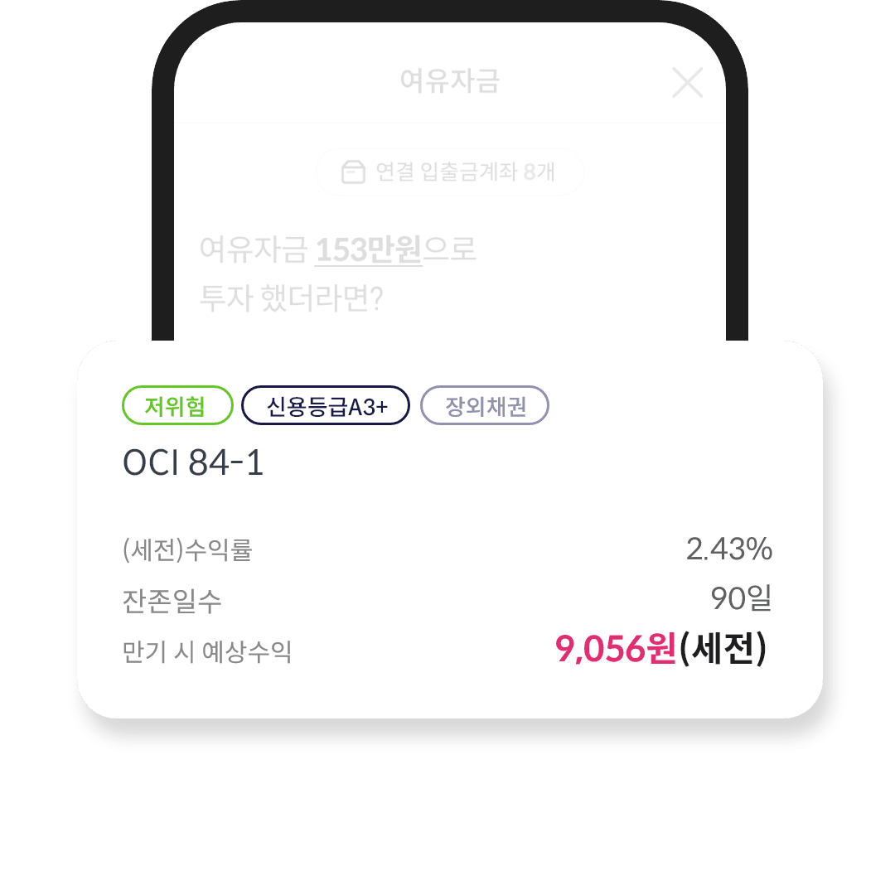

여유자금
팝업 닫기
1
나의 여유자금은?
여러 은행에 분산된 자금을 분석해드려요

2
여유자금으로 투자를 한다면?
나의 여유자금으로 예상되는 수익을 볼 수 있어요

유의사항
입출금계좌의 최근 3개월 일일 평균 잔액을 분석하여 여유자금을 제안드립니다.
분석된 여유자금 또는 잔고가 10만원 미만 및 마이너스 통장만 가지고 있는 경우에는 분석된 정보를 볼 수 없습니다.